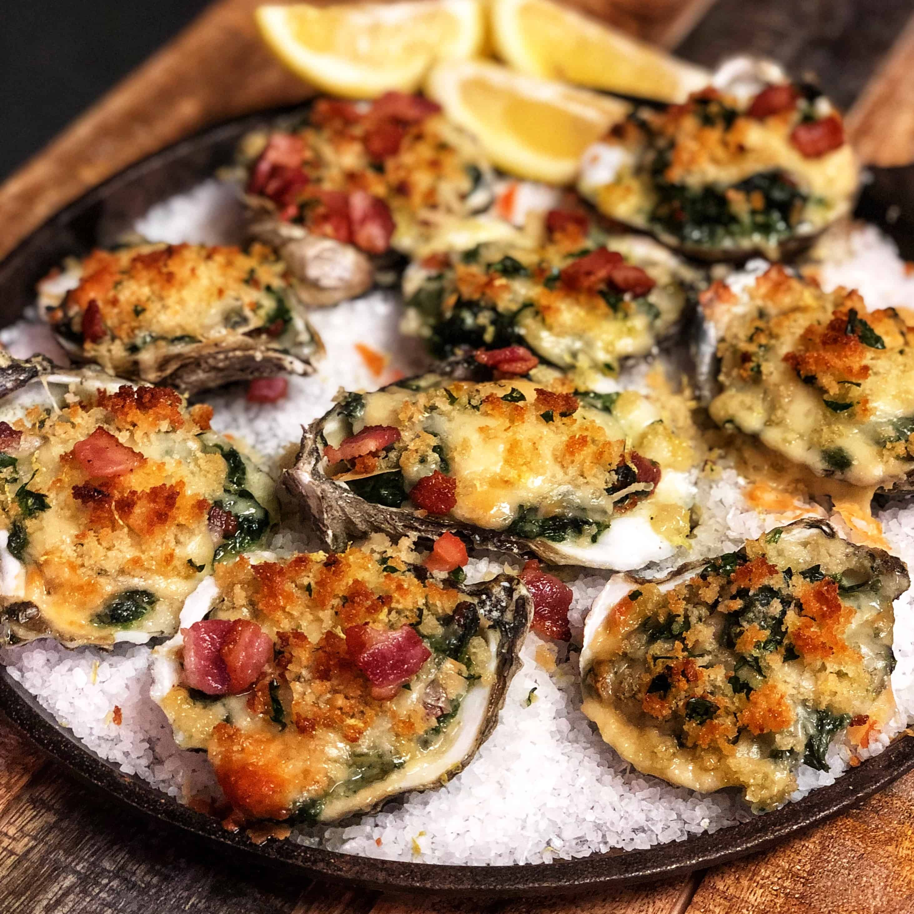

Swiss Chive Spread
This is the Looff family recipe for Oysters Rockefeller with Bacon!
You'll need:
- 1 Dozen Small Oysters in the Shell
- 3/4 of a Stick of Butter
- 1 Cup of Minced Spinach (I recommend placing all minced items in a food processor!)
- 1/2 Cup of Minced Parsley
- 5 Cloves of Garlic Minced
- 1 Shallot Minced
- 1/3 Cup Finely Diced Tomato
- 3 Slices of Bacon, Cooked Crisp, then Minced
- 1 Cup of Panko Breadcrumbs
- 1 Lemon Squeezed over Oysters
- 1 Cup of Shredded Parmesan
- Kosher Salt and Pepper to Taste
Intructions:
- Place oysters, whole, on a hot grill (or broiler) until shells begin to bubble, steam, and pop open slightly ~5 minutes
- Taking care for the heat from the shells, shuck and release the oysters from the top of the shell. Reserve as
much of the internal juices as you can. Discard the top shell.
- Top the oysters with a pad of butter and season with salt and pepper.
- Add minced mixture with parmesan, lemon juice, and panko on top of the oysters.
- Place the oysters under the broiler until the cheese is melted and breadcrumbs are toasted ~6-8 minutes
- Enjoy the Oysters Looff-style!
- (If you're feeling extra bougie, place oysters under a bed of rocksalt and then broil!)
